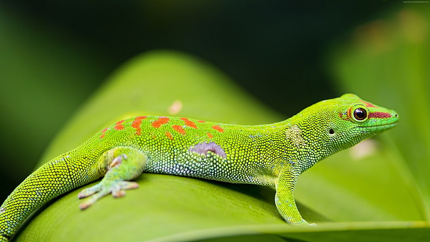

Here are some photos that I have been given/found that are cool examples of what reptiles and amphibians
look like.
A photoshopped photo of an
amphibian which is called a newt. A high resolution photo of another
amphibian which is the toad who is on top of a dirt mound. A high resolution photo of a
reptile which is the chameleon who is on top of a flower.

A high resolution photo of a
gecko, which is another reptile, on top of a leaf.